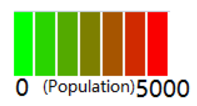

Unpaid child care by age by sex
This variable records whether people in the two weeks prior to Census night, spent any time caring for a child/children (under 15 years) without pay and is applicable to all persons aged 15 years and over. Unpaid child care(CHCAREP) can be consider as one of the unpaid work or voluntary work which can be important factors to affect the quality of people’s lives. The data can assist in the planning of local child care service, and even provide support to these carers. What’s more, the data can reveal the balance between between male and female on doing childcare. Because of traditional role allocation, women do 76% of childcare and 72% of unpaid work overall. They also do 67% of domestic work, 69% of care of adults and 57% of volunteering. From 2011-2016, Male has an obvious increasing rate on providing childcare in many places. There are more and more males provide childcare than in the past. The largest increasing rate for male is 597.37% locate in Sydney, female’s largest increasing rate also locate at this place with 269.23%. It is a good sign that more and more males would like to put themselves into childcare, although the numbers of female that provide childcare is still much higher.
